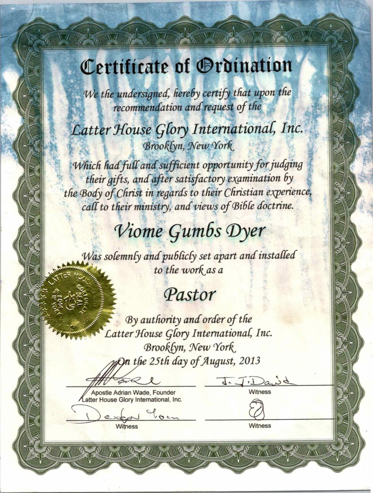
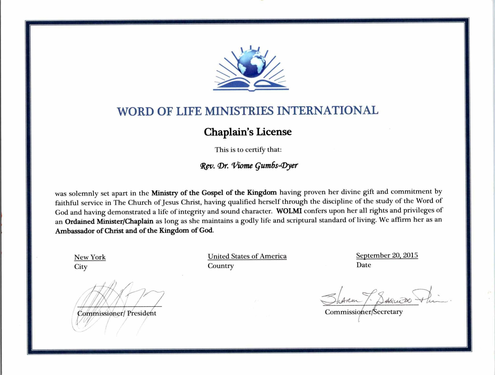
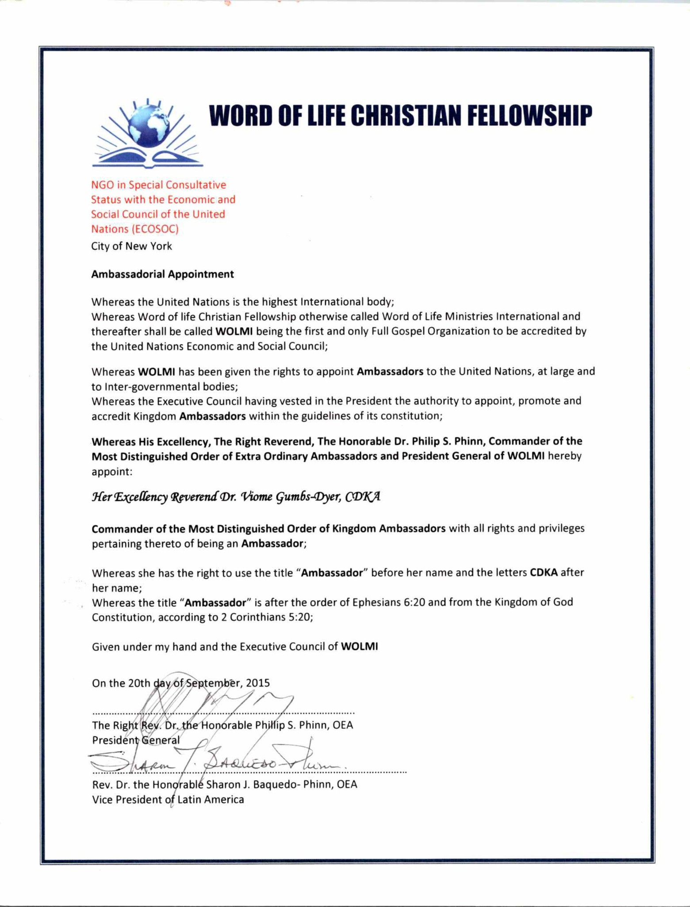
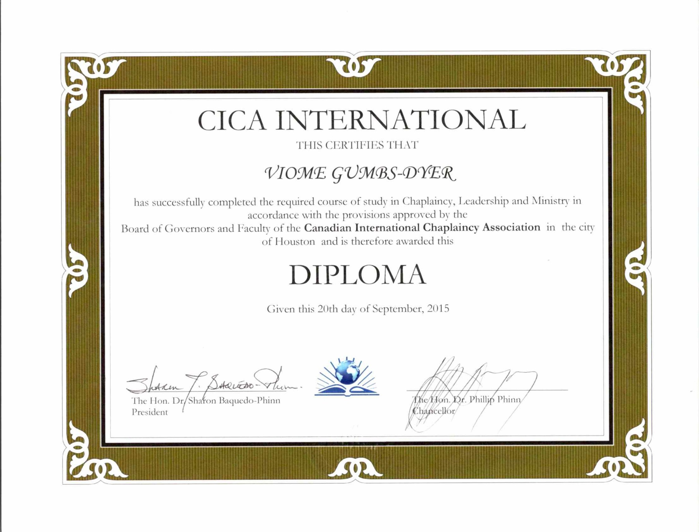
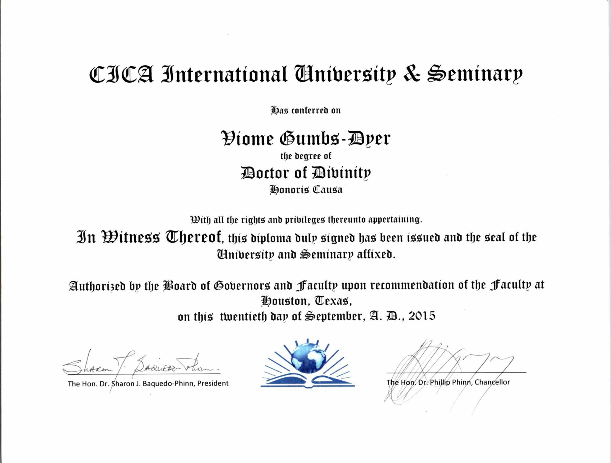
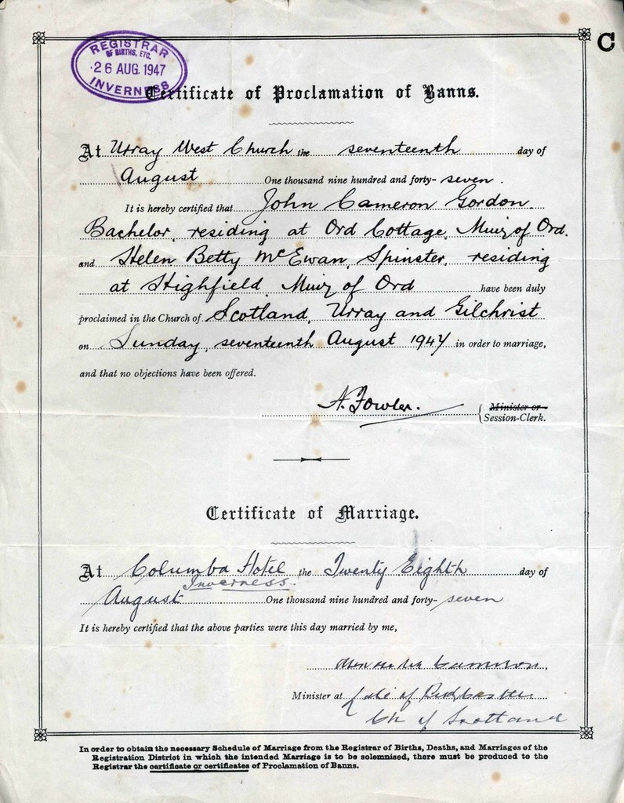

Water Baptism
A public declaration of faith in Jesus Christ, that symbolizes a believer's new life in Christ, signifying cleansing from sin and rebirth in the Holy Spirit.
Miracle Arena Church St.Kitts is a multi-cultural charismatic church based in Halfway Tree, St. Kitts. Under the leadership of Dr. Pst. Viome Gumbs, we train and equip Christians to actively fulfill the commission of Jesus Christ as outlined in Mark 16:15–18: to make disciples and to demonstrate the power of God through miracles, signs, and wonders.
About usAt Miracle Arena Church St. Kitts, we are a vibrant, multicultural family dedicated to loving God, serving others, and transforming lives through the power of Jesus Christ. Here, you'll find a supportive and welcoming community where faith is nurtured, friendships are built, and lives are empowered. Whether you're seeking spiritual growth, meaningful relationships, or a place to belong, we're here to walk with you on your journey. Join us as we worship, grow, and make a difference together!
Our beliefsWe believe in the full gospel of Jesus Christ—His death, resurrection, and return. We believe in the Great Commission (Mark 16:15–18), the work of the Holy Spirit, and the authority of Scripture. We believe in one God, Father, Son, and Holy Spirit, and in the power of God through miracles, signs, and wonders for today.
How can we serve you better? From youth and children's programs to outreach, discipleship, and community support, we offer Christ-centered ministries and services to support you and your family in faith and life.
A public declaration of faith in Jesus Christ, that symbolizes a believer's new life in Christ, signifying cleansing from sin and rebirth in the Holy Spirit.
A special service where parents present their children to God. It's a moment to celebrate family and commit to raising children in a faith-filled environment.
The purpose of cell groups is to cultivate a family-like atmosphere and foster relationships.
We offer Christ-centered wedding ceremonies that honor God's design for marriage. Our team works closely with couples to create a meaningful and personalized service for their special day.
Deepen your relationship with God through mentoring and structured Bible studies. Our discipleship program equips believers to grow in faith, serve others, and become effective witnesses of the Gospel.
Receive biblically-based support and guidance in a confidential setting. Our counselling services are designed to help individuals and families navigate life's challenges with faith and hope.
Designed for those new to the faith, this class offers foundational teachings about Christianity, helping new believers grow spiritually and integrate into the church community.
Our ministry is built on a foundation of formal recognition, ordination, and service. Below are selected credentials and certifications that reflect our commitment to excellence in ministry, chaplaincy, and global ambassadorial service.

CICA International University & Seminary — Doctor of Divinity Honoris Causa, conferred September 2015.

Word of Life Christian Fellowship (WOLMI) — Commander of the Most Distinguished Order of Kingdom Ambassadors (CDKA), September 2015.

Word of Life Ministries International — Ordained Minister/Chaplain, Ambassador of Christ, September 2015.

CICA International (Canadian International Chaplaincy Association) — Chaplaincy, Leadership and Ministry, September 2015.

Latter House Glory International, Inc. — Solemnly set apart and installed to the work as Pastor, August 2013.

Certificate of Proclamation of Banns and Certificate of Marriage — Urray West Church, Inverness, Scotland.
Our prayer for you is that the God of all grace anoints you with fresh oil and His precious Spirit illuminates the Word as you read. May He empower you to effectively communicate to others the vibrant hope that He has given you to persevere the struggles that you have overcome and continue to overcome.
I pray that your home be a reflection of the joy and peace that God has promised to all of His children who follow Him. I bless your children, the fruit of your body. I speak life into your marriage, your ministry and your mission. As you lie down at night I pray for more than sleep. I pray for rest.
Rest in Him and arise refreshed for we need you. Your prayers, your support and your love are important to us. So we pray you will take care of yourself.
DR. PST. VIOME GUMBS
Senior Pastor
“I have told you these things, so that in me you may have peace. In this world you will have trouble. But take heart! I have overcome the world.”— John 16:33
Upcoming:
Miracle Arena For All Nations
Moments from our ministry: our pastor, our facility, ceremonies, and life together as a family.


We had Chinese visitors in December 2026.


Sis. Sheroon received a gift during our mothers day service in 2025.

Miracle Arena Church St. Kitts, located in Halfway Tree, St. Kitts and Nevis, was founded on 4 April 2014 by Rev. Dr. Viome Gumbs. The church exists to train and equip Christians to fulfill the Great Commission in Mark 16:15–18 and to demonstrate the power of God through miracles, signs and wonders.
Founder & Senior Pastor: Rev. Dr. Viome Gumbs (Rev. Dr. Viome Gumbs), a born-again, baptized believer who was called to ministry at age 49 and previously led Redeemed Life International (2014–2020) before the ministry became Miracle Arena Church St. Kitts.
She serves under the spiritual covering of Prophet Dr. Kofi Danso of Miracle Arena For All Nations, emphasizing evangelism and the demonstration of God's power.
Location: Halfway Tree, St. Kitts (St. Kitts and Nevis)
Cell / WhatsApp: +1 (869) 660-8850
Email: miraclearearenaskb@gmail.com
"Each of you should give what you have decided in your heart to give, not reluctantly or under compulsion, for God loves a cheerful giver."— 2 Corinthians 9:7 (NIV)
We welcome your support. To give or inquire about giving, please contact us on WhatsApp:
+1 (869) 660-8850We'd love to serve you. Visit us in person or call our 24/7 prayer line.
Halfway Tree, St. Kitts (St. Kitts and Nevis)


{kind=link}
{kind=link}
{kind=link}
{kind=link}
{kind=link}
{kind=link}
{kind=link}
{kind=link}
{kind=link}
{kind=link}
{kind=link}
{kind=link}
{kind=link}
{kind=link}
{kind=link}
{kind=link}
{kind=link}
{kind=link}
{kind=link}
{kind=link}
{kind=link}